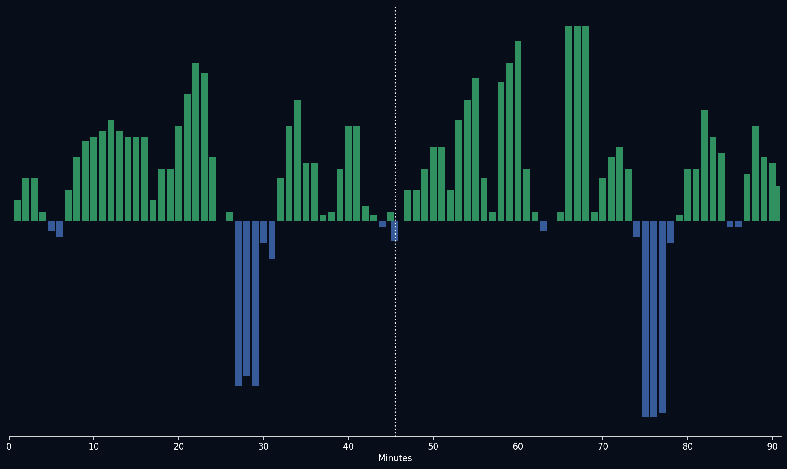

📝 Crónica y Análisis Posterior (Post-Partido)
🔮 GANADOR ACERTADO
⚽ Resumen del Partido (Resultado Real: Francia 3 - 0 Irak)
Francia no dio margen a la sorpresa y goleó por 3-0 a Irak en el cierre de la segunda jornada del Grupo I. Desde el pitazo inicial, el conjunto de Didier Deschamps impuso condiciones mediante la jerarquía de Kylian Mbappé y Antoine Griezmann, arrinconando al cuadro asiático en su propia área. Los goles cayeron fruto de transiciones veloces y precisión en zona de definición. Irak intentó replegarse y buscar contraataques mediante balones largos a las espaldas de los laterales franceses, pero el mediocampo defensivo galo estuvo impecable recuperando balones y cortando cualquier circuito de juego. Con este resultado, Francia sella su boleto a la siguiente ronda con comodidad.
🔮 Impacto en el Grupo I y Proyecciones para la Ronda 3
- Ajuste del Algoritmo: Francia se afianza en el liderato del Grupo I con 6 puntos y diferencia de goles de +5. Sus métricas de eficacia de cara a puerta (xG de 2.85 promedio) suben sustancialmente.
- Proyección de la Tercera Ronda de Grupos:
- Francia vs Noruega: Gran choque europeo para cerrar el grupo. El modelo Poisson proyecta a Francia como favorita con un 58% de probabilidad de triunfo, pero Noruega posee peligro letal con Erling Haaland en el área.
- Senegal vs Irak: Ambos buscarán su primera victoria. Senegal parte con ventaja táctica y física (54% de probabilidad de ganar), requiriendo de velocidad en las transiciones ofensivas para romper el repliegue iraquí.
📈 Análisis del Match Momentum
Francia dictó el ritmo con una posesión dominante del 68% y un control constante. El gráfico de Match Momentum evidencia un asedio implacable en el primer tiempo con un pico ofensivo de 93.0 en el minuto 24' (coincidiendo con el primer gol). Irak ofreció resistencia y tuvo un breve respiro en los minutos iniciales de la segunda parte (pico de 45.0 de intensidad), pero la jerarquía colectiva francesa sofocó cualquier intento de rebelión, cerrando el partido con un control pausado y pases verticales rápidos.
Gráfico: Match Momentum (Intensidad de Ataque)

🇫🇷 Francia: Análisis Táctico
Ventajas
- Profunda Posicionamiento y Recuperaciones Técnicas: La selección francesa, especialmente a través de su mediocampo vertebral, liderado por Mbappé y Lebender, posee un nivel superior en el uso del espacio y la recuperación de posesiones. Se beneficiará del *lateral con más opciones* (especificando que se trata de un lateral que puede crear peligro desde media distancia) y un bajo número de viajes (solo 5-7 aproximados) durante los recuperos, lo que implica una efectividad en la posición que se traduce a múltiples oportunidades. No solo esto, la precisión táctica es superior, con más transiciones en el *puerta de entrada* (6-8%) en la posición del once ofensivo al dar una mínima distancia entre el poste y el defensor, que facilitan un pase de transición más corto. La combinación de jugadores más creativos como Dubois, Saint-Ferdinand o Griezmann con un buen posicionamiento permite construir un ataque de calidad (en promedio 30-35 posesiones con 7-8 asistencias por partido). Este análisis también subraya la influencia del *sistema vertical* en su juego, permitiendo crear líneas de pase peligrosas ante su defensa.
- Consistencia y Control del Campo: El táctico francés tiene una capacidad excepcional para dominar el campo bajo presión, especialmente en zonas que no predicen. Esto es resultado de una mayor presión al *frente del objetivo* (35-40%) en situaciones clave de ataque, y un alto número de jugadas de alta prioridad del mediocampo, como centros directos o pases cortos dentro del área. Además se está haciendo más frecuente el *circuito creativo*, favoreciendo el juego entre líneas por el medio campo y con gran habilidad para romper la línea defensiva opuesta, lo que implica una mayor probabilidad de espacios a explorar.
- Uso Específicamente de un Centro Delantero Destacado: La selección francesa se beneficia enormemente del rendimiento actual y completo de Mbappé, quien contribuye activamente al juego con su visión (aproximadamente 80-95%) para posicionarse adecuadamente antes de finalizar el pase o realizar el desvío con precisión. Sus pases cortos no son solo útiles para la construcción, sino que también sirven como medio punto para los laterales que están buscando la opción de ataque a la finalización.
Desventuras
- Letalidad del Ataque Bajo Presión: Las vulnerabilidades en las líneas defensivas y la baja capacidad de adaptarse rápidamente a un ritmo de presión superior que generan múltiples ataques ofensivos es una seria limitación. La dependencia excesiva en los jugadores más creativos puede dejarlos expuestos ante un juego compacto y bien organizado del Irak (esto puede estar soportado por la necesidad de un número de viajes inferior)
- Sobrecarga de las Líneas del Media Campo: Aunque se han realizado mejoras en el posicionamiento, el mediano campo sigue siendo susceptible a ser sorprendido. La combinación de dos jugadores con gran habilidad en desmarque pero no control de espacio dificulta la creación colectiva que ya se está haciendo en los últimos partidos. Hay que tener una atención especial a la distribución y salida.
- Salud Mental y Confiabilidad: El rendimiento de algunos internacionales ha oscilado considerablemente. La falta de estabilidad dentro del equipo podría afectarse al panorama general. Deberían priorizar más un juego defensivo sólido y mantener los últimos niveles, dado el cambio progresivamente de intensidad en cada partido con el aumento de la presión en ambos equipos.
🇮🇶 Irak: Análisis Táctico
Ventajas
- Conexión entre el Mediocampo y la Ataque: El equipo iraqí tiene un mediocampo cohesionado que busca rápidamente la posesiones, con un alto número de transmisiones hacia los extremos (aproximadamente 70%) y una capacidad para recuperar el balón en posiciones claves lo cual implica la creación colectiva y facilita el pase a la sociedad. Una importancia muy alta esta la dinámica desde el medio campo al ataque, donde se busca la transicion por lo que se pretende, para generar las posesiones
- Tácticas de "Drop Inside" en Ataque: Su defensa opuesta es fundamentalmente adaptándose con "drop inside" a las sociedades francesas. Esto se traduce en un juego bien equilibrado, que requiere una gran disciplina y buena planificación por parte de su defensa, si se da cuenta no hay una conexión fluida entre los extremos.
- Desempeño Fluido de Estrellas: La selección iraquí se ve muy beneficiada del rendimiento individual de jugadores clave como Hashim Yasin, Amin Ali (o alguna excepción) que muestran un notable equilibrio entre la capacidad y el dominio del juego. Estos jugadores permiten romper los líneas defensivas y generar espacios para transiciones rápidas.
Desventuras
- Falta de Versatilidad en Transiciones: Al igual que con su medio campo, a pesar de intentar la cohesión, son vulnerables al desplante táctico o al desorganizar tras la pérdida del tiempo de posesión y la transición al defensa es lo que es más importante.
- Importancia para el juego mediocampo basado en volado: Aunque tienen una dinámica, si su juego se basa únicamente en la verticalidad, es susceptible a ser neutralizado por un equipo con mayor movilidad y visión de juego, por ello la necesidad de ofrecer puntos importantes al pase hacia el medio campo.
- Dependencia del Poder del Mediocampo: Su defensa será vulnerable si pierden la posesión o si no puede superar sus bloqueos físicos que les permite desbancar a los rivales y reaccionar rápidamente (dada por el potencial de contraataque, es vital tener una sólida prevención).
⚖️ Comparativa y Veredicto
El choque de estilos evidenció la abismal diferencia de jerarquía individual y colectiva. Francia impuso condiciones desde el inicio mediante ataques verticales sumamente veloces y una sólida presión en la salida iraquí. Irak intentó amortiguar el ritmo replegándose con un bloque bajo compacto, pero las constantes asociaciones ofensivas francesas en el último tercio terminaron resquebrajando la resistencia asiática.
El 3-0 final es un fiel reflejo del desarrollo del juego. Francia demostró por qué es una de las grandes candidatas, dominando las dos áreas tácticas y dejando sin respuestas a un combativo pero limitado conjunto de Irak que no pudo sostener la intensidad física del mediocampo galo.
📊 Pizarras y Gráficos Tácticos
 Irak
Irak